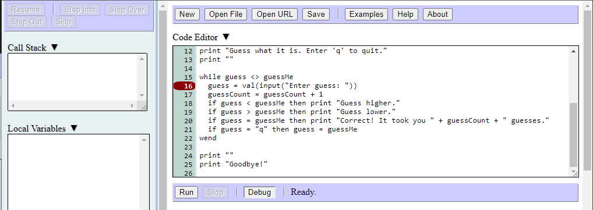
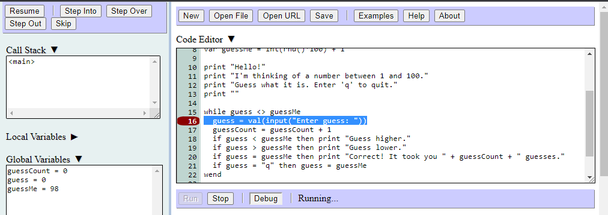

Breakpoints allow you to tell the debugger to pause program execution on specified lines of code. To add a breakpoint, click on the bar located on the left side of the code editor. A red marker will appear next to the breakpoint line:
When you run your program at normal speed with the debugger pane open, the debugger will automatically pause program execution at the first breakpoint line it encounters:
To remove a breakpoint, click on its marker in the breakpoint bar.